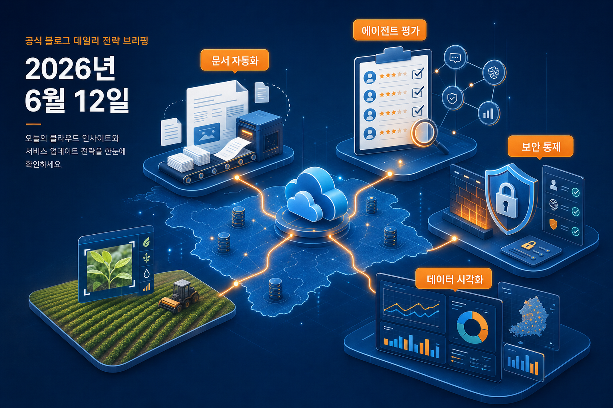
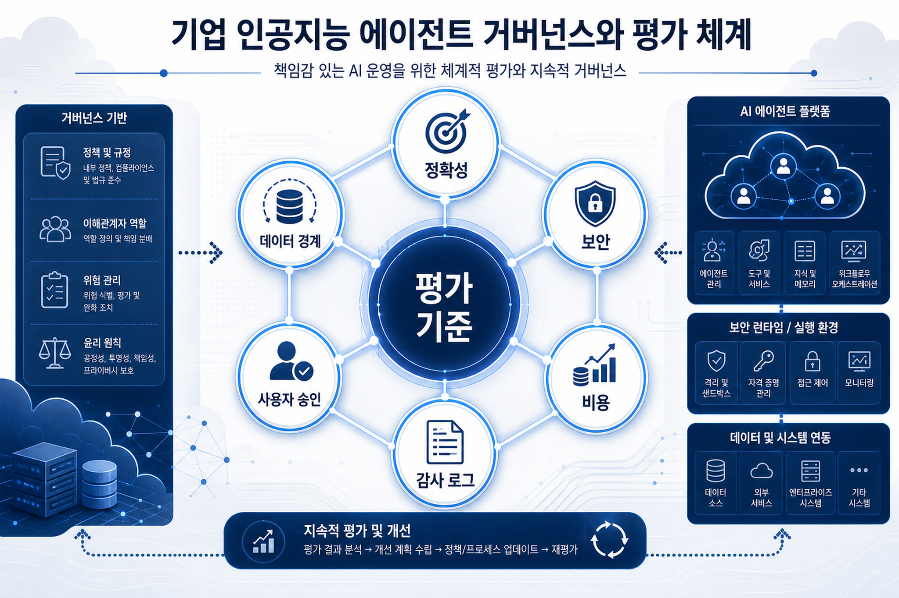
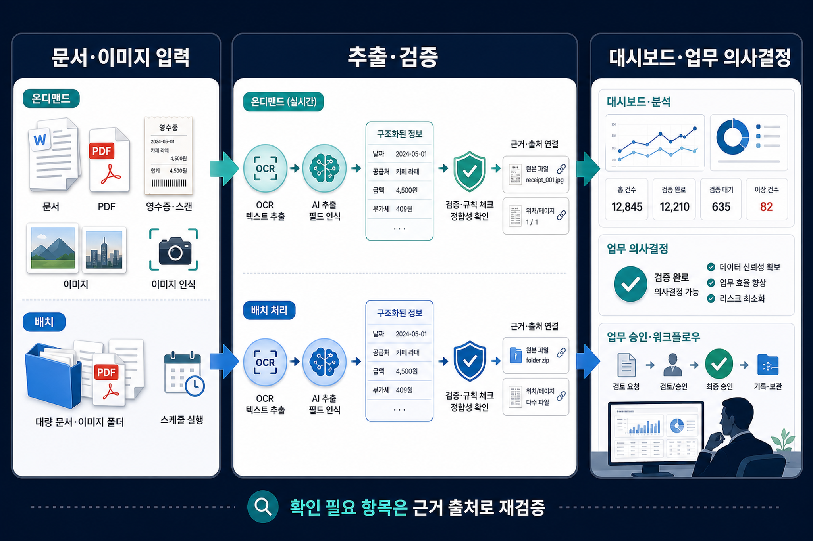

Amazon Bedrock Vision LLM과 Amazon OpenSearch Service를 활용한 농약 제품 이미지 인식 시스템 구축기
농약 제품 사진을 기반으로 제품 정보를 찾는 이미지 인식 사례입니다. 현장 이미지와 검색 인덱스를 연결할 때 데이터 품질, 제품 마스터, 사용자 촬영 환경을 함께 검토해야 합니다.
2026년 6월 12일 실행에서 AWS 한국 기술 블로그, AWS 뉴스 블로그, AWS 기계학습 블로그 피드 3개를 확인했고 신규 게시물 8건을 수집했습니다. 오늘의 관찰은 에이전트 평가와 보안, 문서·이미지 데이터 처리, 대시보드 의사결정 기능이 서로 다른 글에서 같은 방향으로 강화되고 있다는 점입니다.

Agent-EvalKit, Bedrock AgentCore 기반 프롬프트 인젝션 방어, Codex와 Claude Code를 함께 쓰는 Harness Engineering 글은 모두 에이전트 사용을 단순 호출이 아니라 평가·권한·실행 흐름으로 관리해야 한다는 신호를 줍니다.
Amazon Bedrock 기반 온디맨드·배치 문서 처리, Bedrock Data Automation 청사진 최적화, 농약 제품 이미지 인식 사례는 비정형 데이터 활용이 범용 요약을 넘어 추출 정확도와 업무 적용성으로 이동하고 있음을 보여줍니다.
Amazon QuickSight 스파크라인과 사용자 지정 정렬은 거대한 모델 변화는 아니지만, 현업 사용자가 추세를 더 빨리 보고 원하는 기준으로 정렬하는 실무 경험을 개선합니다.
농약 제품 사진을 기반으로 제품 정보를 찾는 이미지 인식 사례입니다. 현장 이미지와 검색 인덱스를 연결할 때 데이터 품질, 제품 마스터, 사용자 촬영 환경을 함께 검토해야 합니다.
여러 코딩 에이전트를 Bedrock 기반 실행 환경에서 조합하는 실험입니다. 개발 생산성뿐 아니라 저장소 권한, 검토 흐름, 테스트 자동화 기준을 함께 설계해야 합니다.
에이전트가 다른 사용자의 데이터나 내부 정보를 노출하지 않도록 다층 보안 경계를 설계하는 패턴입니다. 권한 분리, 정책 집행, 감사 로그가 핵심 검토 항목입니다.
문서 처리 시간을 기준으로 즉시 처리와 배치 처리를 선택하는 지능형 문서 처리 패턴입니다. 업무 긴급도와 비용 제약에 따라 처리 경로를 나누는 설계가 중요합니다.
인공지능 에이전트를 여섯 단계 평가 흐름으로 검증하는 공개 도구 사례입니다. 정확성, 작업 완결성, 실패 재현성, 평가 데이터 관리가 도입 판단의 중심이 됩니다.
대시보드 안에서 추세선과 사용자 지정 정렬을 제공해 현업 의사결정을 돕는 기능 업데이트입니다. 작은 시각화 기능도 사용자 수용성과 업무 속도에 영향을 줍니다.
예시 문서와 기대값을 바탕으로 추출 지시문을 빠르게 개선하는 기능입니다. 별도 미세조정 없이 정확도를 높일 수 있지만, 대표 예시 선정과 정답 데이터 품질이 중요합니다.
선도 개발팀이 인공지능을 단순 보조 도구가 아니라 개발 방식 재설계의 축으로 활용하는 사례입니다. 생산성 수치보다 검증, 품질, 팀 운영 방식의 변화가 함께 검토되어야 합니다.
이번 수집 데이터에서 가장 눈에 띄는 변화는 인공지능 기능의 “가능성”보다 “검증 가능한 사용 조건”이 더 많이 등장한다는 점입니다. Agent-EvalKit은 평가 절차를, Bedrock AgentCore 보안 패턴은 데이터 노출 방어를, Bedrock Data Automation 최적화는 추출 품질을 각각 다룹니다. 기업 의사결정자는 기능 도입 여부만 보지 말고 평가 데이터, 승인 경로, 로그, 실패 시 재처리 기준을 함께 확인해야 합니다.

온디맨드와 배치 처리 선택지는 업무 긴급도와 비용 제약을 나눠 설계할 수 있게 합니다. 다만 실제 문서 유형, 정답 데이터, 예외 처리 기준이 없으면 정확도 개선 효과는 확인 필요입니다.
농약 제품 이미지 인식 사례는 현장 사진과 검색·추천 경험을 연결하는 실무형 패턴입니다. 한국 기업은 제품 마스터 데이터 품질과 이미지 촬영 조건을 먼저 점검해야 합니다.
Codex, Claude Code, Harness Engineering 글은 여러 코딩 에이전트를 조합하는 실험을 다룹니다. 적용 전에는 산출물 검토, 저장소 권한, 자동 실행 범위, 회귀 테스트를 분리해야 합니다.

Bedrock AgentCore 보안 설계 글은 사용자 데이터 노출 문제를 직접 다룹니다. 한국 기업은 개인정보, 고객 데이터, 내부 문서 접근 권한을 에이전트 단위로 분리할 수 있는지 확인해야 합니다.
농업 이미지 인식과 문서 추출 글은 현장 사진, 스캔 문서, 양식 데이터가 검색·검증 가능한 업무 자산으로 전환될 가능성을 보여줍니다.
Agent-EvalKit과 Amazon QuickSight 기능 글은 모델 성능뿐 아니라 사용자가 믿고 확인할 수 있는 평가·시각화 경험이 중요하다는 점을 보여줍니다.
| 표시 제목 | 출처 블로그 | 발행일 | 주요 기술 | 링크 |
|---|---|---|---|---|
| Amazon Bedrock Vision LLM과 Amazon OpenSearch Service를 활용한 농약 제품 이미지 인식 시스템 구축기 | AWS 한국 기술 블로그 | 2026-06-11 | Amazon Bedrock | 원문 |
| Amazon Bedrock 위에서 Codex와 Claude Code 함께 쓰기: Harness Engineering으로 구현해보기 | AWS 한국 기술 블로그 | 2026-06-11 | Amazon Bedrock | 원문 |
| 프롬프트 인젝션 방어: AgentCore 기반 다층 보안 설계 패턴 | AWS 한국 기술 블로그 | 2026-06-11 | Amazon Bedrock, Bedrock AgentCore, AWS Lambda, Amazon DynamoDB | 원문 |
| 온디맨드·배치 파이프라인으로 문서 데이터 추출 유연성 확보 | AWS 기계학습 블로그 | 2026-06-12 | Amazon Bedrock, AWS Lambda, Amazon S3, AWS Marketplace, Amazon DynamoDB | 원문 |
| Agent-EvalKit으로 인공지능 에이전트 평가를 체계화 | AWS 기계학습 블로그 | 2026-06-12 | Amazon Bedrock, AWS Marketplace | 원문 |
| Amazon QuickSight 스파크라인·사용자 지정 정렬로 대시보드 의사결정 개선 | AWS 기계학습 블로그 | 2026-06-12 | Amazon Q, AWS Marketplace | 원문 |
| Amazon Bedrock Data Automation 청사진 추출 정확도 최적화 | AWS 기계학습 블로그 | 2026-06-12 | Amazon Bedrock, AWS Marketplace | 원문 |
| 선도 개발팀의 인공지능 네이티브 개발 방식 재구성 | AWS 기계학습 블로그 | 2026-06-11 | Amazon Bedrock, AWS Marketplace | 원문 |